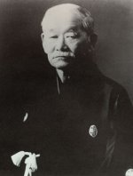

Jigoro Kano
de grondlegger van het judo
door Dennis de Booij
Op 28 oktober 1860 werd te Mikage, nabij de havenstad Kobe, Jigoro Kano geboren. Hij was de derde zoon van Jerosaku Kano, een handelaar in scheepvaartmaterialen. Met zijn familie verhuisde hij in 1871 naar Tokio waar hij op zeventienjarige leeftijd filosofie, economie en politieke wetenschappen ging studeren.aan de keizerlijke universiteit. Later behaalde hij een doctorstitel in de filosofie en ging in het onderwijs. Jigoro Kano was klein van stuk en woog amper 48 kilo. Door zijn tengere postuur was hij een makkelijk doelwit voor de pestkoppen onder zijn medestudenten. Kano was echter niet van plan om dit te accepteren. Hij had gehoord over jiu-jitsu waarmee een zwak man een sterkere tegenstander kon overwinnen.Een vriend van de familie Kano, Teinosuke Yagi, was een oude jiu-jitsu meester die Jigoro Kano op achttienjarige leeftijd de eerste grondslagen van het jiu-jitsu bijbracht. Later kreeg hij ook les van Hachinosuke Fukuda en Masatomt Iso van de tenshin-shin'yo ryu (ryu = school) en Tsunetoshi Iikubo van de kito ryu.
Uiteindelijk, na bestudering van literatuur over de diverse jiu-jitsu ryu's en lichamelijke opvoeding, ontwikkelde Kano zijn eigen systeem. In 1882 opende hij zijn school, de Kodokan, waar hij Kodokan judo onderwees. Het verschil met jiu-jitsu blijkt al uit de naam: 'jiu' is vrijvertaald 'zacht' of 'meegaand' en 'jitsu' is 'kunst'. Kano bestempelde zijn systeem 'judo', 'de zachte weg'. Hij wilde duidelijk maken dat zijn visie op de martial arts niet alleen een kunstje was dat je kunt aanleren maar een levensweg. Een keuze om in je leven een bepaald pad te lopen.
Kano's filosofie over het judo komt onder andere tot uitdrukking in het principe van seiryoku-zen'yo (vrij vertaald: best use of energy of maximum resultaat). Dit houdt in dat je met een minimum aan inspanning een maximaal resultaat probeert te behalen. Het principe komt o.a. terug in de judotechnieken waarbij de judoka gebruik maakt van energie en beweging van de opponent door, in plaats van tegen te werken of te blokkeren, juist mee te gaan in de beweging en deze zelfs te versterken waarna door bijvoorbeeld een worp de tegenstander gevloerd kan worden.
Kano's school groeide uiteindelijk uit tot 119.000 leerlingen waaronder 85.000 zwarte banddragers. Het judo wordt later ook een Olympische sport waarbij vele Nederlanders medailles mee naar huis brachten. Met name Anton Geesink en Wim Ruska en hun gouden plakken in de jaren zestig van de vorige eeuw hebben Nederland op de kaart gezet als judoland.
Op 4 mei 1938 overleed Kano sensei op het stoomschip Hikawa-Maru aan een longontsteking.